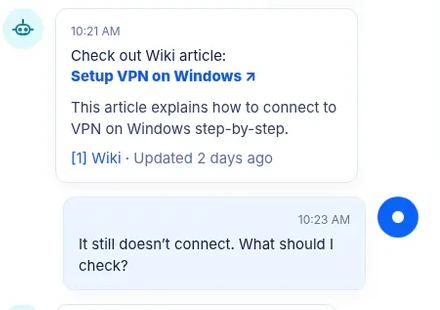

01 · Sources
Connect your sources
Connect and organize these sources for retrieval with access controls.
We build AI systems for customer inquiries, proposal drafting, internal knowledge and data queries. We also offer managed AI services, with support from initial assessment through deployment and maintenance.

View full interface ↗Annotations describe the example interface. Generated content can be wrong and needs review.
Proposal builder · First draft
IT assistant · Routine inquiries handled
Engineering, professional services and more
Start with the work. Connect its sources, workflow and review process.
Connect and organize these sources for retrieval with access controls.
Cyano Core selects sources and context for the current task.
Add validation rules, source citations and human approval to the workflow.
Generated content can be wrong. Work involving contracts or finances needs review.
Illustrative data, not internal benchmark results or a project performance commitment.
Every core member of Cyano has more than six years of software development experience, has worked on AI model R&D and has worked at a Fortune Global 500 company.
Strategy · Partnerships · AI commercialization
LLM engineering · Context architecture · Integration
Delivery · Operations · Quality
Requirements · Product design · Solutions